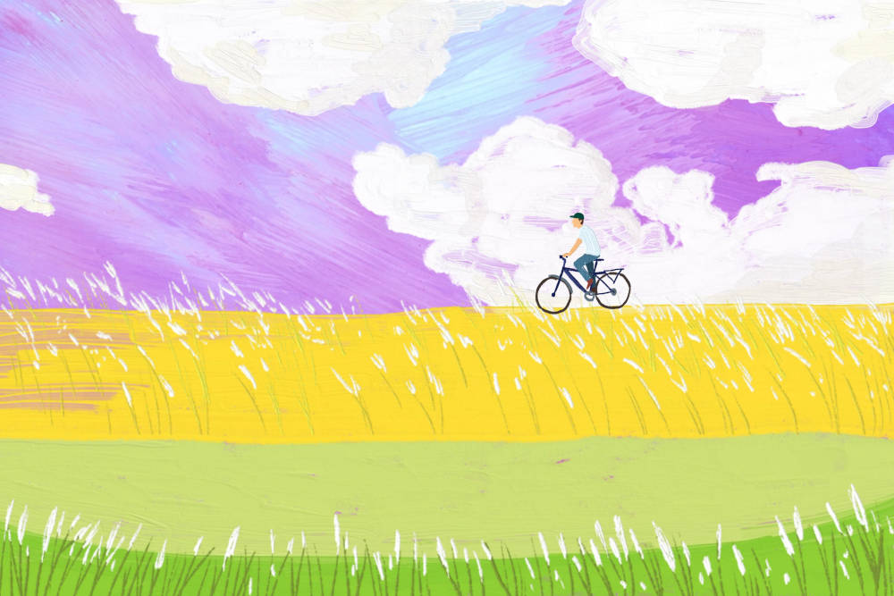

É simplesmente um velho meme sobre os Uganda Knuckles em que eles perguntam do u know the wae?
, e o meme é só isso mesmo.
Posso falar sobre o CO2
e sobre o X2+5X+10, ou seja, uma equação de segundo grau!
Mas mesmo estando sem ideias, eu posso ir falando qualquer coisa que vier na minha cabeça
Would i rather be feared or loved?
Easy, both. I want people to be afraid
of how much they love me.
Michael Scott.
Olha só, um textinho.
E por fim, já ouviu falar da OCR? é a Organização do Cu Roxo
E pra fechar, uma imagem bonitinha que eu achei:
